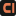

Creative Sound Studio. For organisations, brands and events. The approved combination brings bone surfaces and restrained sans-serif headlines together with the original open-C + upright signal, a real founder photograph, and personal archive notes.
01 / LOGO FAMILY
Always the full name.
Primary · ink + vermilion on bone
Reversed · bone + vermilion on ink
One colour · ink
One colour · bone
Vector outlines and transparent PNGs included. Keep half a symbol’s height clear around the lockup. Minimum screen width: 190px.
02 / COLOUR & TYPE
Warm ground. Clear voice.
Ink #151817Bone #efece4Vermilion #e67c52
Montserrat for headlines, body and navigation. Liberation Serif Italic is reserved for personal notes. Bundled fonts include their licences.
Start with people. Find the story.
Use ink text on vermilion. Keep small text ink or quiet grey on bone.
03 / FAVICON & WATERMARK
Recognisable at every scale.

The favicon is the practical symbol-only exception. Photographic watermarks retain the complete studio name.
04 / THE SELECTED IDENTITY IN CONTEXT
Strong warmth. Subtle typography.
This is an identity study with demonstration interactions. The complete homepage and functioning enquiry journey are subsequent phases.